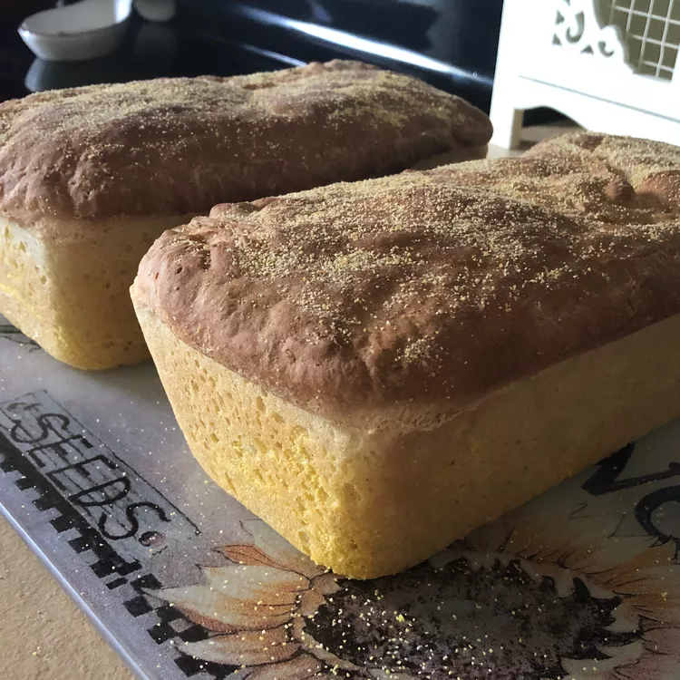

English Muffin Bread

This bread has the chewy consistency of English muffins. It's especially good toasted!
Ingredients
2 cups milk
½ cup water
2 tablespoons cornmeal
6 cups bread flour
2 (.25 ounce) packages active dry yeast
1 tablespoon white sugar
2 teaspoons salt
¼ teaspoon baking soda
Steps To Make Muffin
- Warm the milk and water in a small saucepan until very warm (125 degrees F/50 degrees C). Lightly grease two 8x4 inch loaf pans; sprinkle cornmeal inside pans.
- In a large bowl, mix together 3 cups flour, yeast, sugar, salt and soda. Stir milk into the flour mixture; beat well. Stir in the remaining flour, 1 cup at a time, until a stiff batter is formed. Spoon batter into prepared pans. Cover and let rise in a warm place for until nearly doubled in size, about 45 minutes. Meanwhile, preheat oven to 400 degrees F (200 degrees C).
- Bake in preheated oven until golden brown, about 25 minutes. Remove from pans immediately and cool.